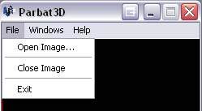
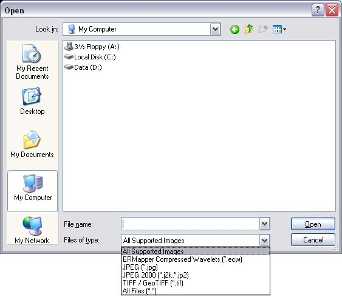
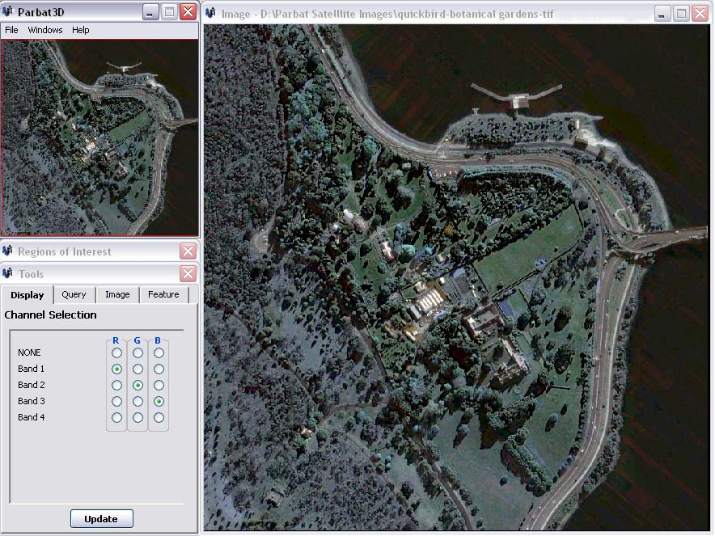

Before you can do anything useful with Parbat 3D, you must first load an image. To load an image, follow these steps:
Click on the "File" menu, followed by "Open Image...".

Choose the file type you are looking for. The default option shows all readable images. If you can't see your image file, trying changing the file type to 'All Files (*.*)'.

Select the image file you wish to display and click Ok. After the image has loaded, you should be able to see the whole image displayed in the Overview window. An Image window will also be displayed showing you the top-left position of the image at the default zoom level.
